Ionut Popovici a.k.a JOHN SPIDER is a trance DJ and producer hailing from Iasi, Romania. He specializes in emotional vibes and outputs a variety of subgenres from deep/progressive trance to hard-hitting uplifting and psytrance.
He started a weekly radio show that he named Spiders in the Mix in 2008 that eventually got featured on Trance.FM that ran for 177 episodes and ended in 2011 due to work commitments. After a long absence from the scene, in 2017 he restarted his old show with a unique style of seamlessly blending deep and progressive vibes with hammering trance sounds.
As a producer he has released tracks and remixes under labels such as Alter Ego, Arkham Digital, Boomtic Records, Tuned:Flow, and Vibrate Audio.
VOIDLOGIC is the new alias of Ionut Popovici, formerly known for his trance productions under John Spider. Now venturing into the realm of drum and bass, VOIDLOGIC brings a fresh, energetic approach to the genre, blending uplifting melodies with dancefloor-driven beats. His debut track, "Until You See the Sun," is an electrifying fusion of fast-paced rhythms and euphoric vibes, guaranteed to set the stage for his presence in the drum and bass scene.
Having made his mark in trance with releases on labels like Alter Ego, Arkham, Boomtic Records, Tuned:FLOW, and Vibrate Audio, Ionut’s new project VOIDLOGIC explores a dynamic soundscape with a focus on high-energy, emotional drum and bass tracks.